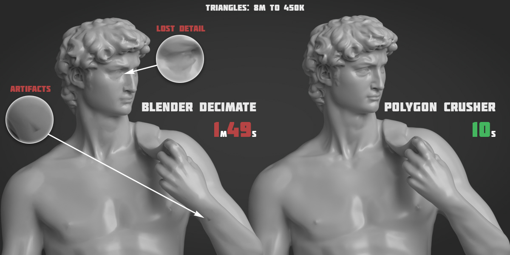
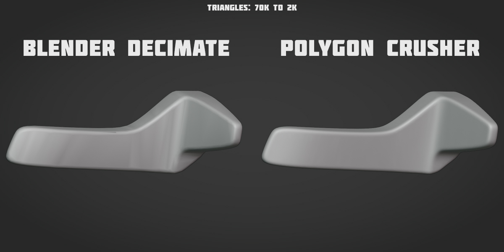
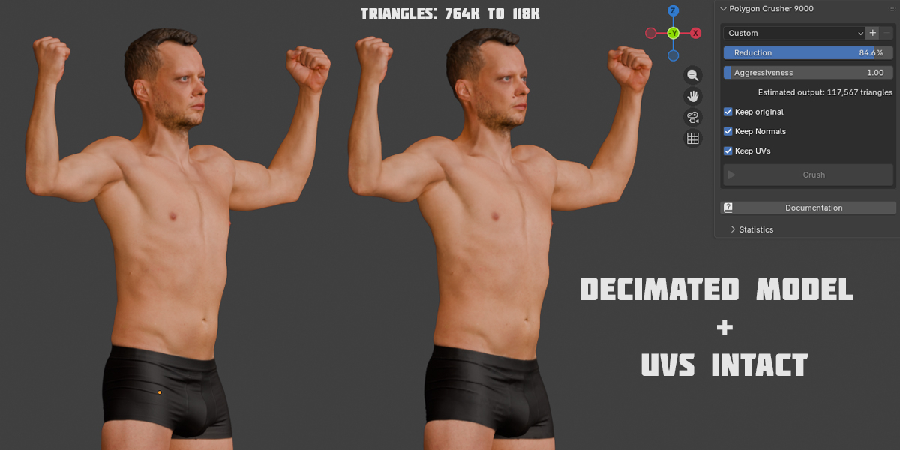
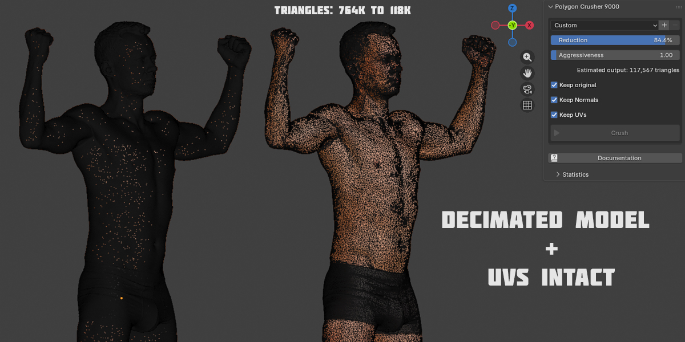

Examples
High-poly sculpt — 8M → 450K triangles
A photogrammetry-grade scan crushed to about 6% of its original triangle count. Polygon Crusher runs roughly 11× faster than Blender's built-in Decimate and avoids the artifacts and lost detail visible in the Decimate result.

Hard-surface mesh — 70K → 2K triangles
A 97% reduction on a hard-surface mesh. Polygon Crusher preserves the silhouette and curvature of the original shape on a tight triangle budget, where Decimate distorts the form.

Textured photogrammetry scan — 764K → 118K triangles, UVs preserved
A full-body 3D scan crushed by ~85% with Keep UVs enabled. The decimated mesh keeps the original UV map intact, so the photographic texture stays correctly mapped onto the lower-poly result — no re-baking, no seam distortion.

The wireframe view of the same crush makes the topology change explicit — dense original on the left, ~85% lighter decimated result on the right:
